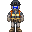
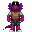

Template:Autowiki/Content/Ships/Delta-class Frigate
From Shiptest Wiki
Jump to navigationJump to search
This page is automated by Autowiki. Do NOT edit it manually.
| Short Name: | Delta-class |
| Manufacturer: | Unknown |
| Faction: | Unspecified (Prefix: NSSV) |
| Crew Size: | 7 |
| Size: | Medium |
| Tags: | Science, Robotics |
| Buyable: | Yes |
The Delta is a compact and advanced mining ship that supplements its comparatively small organic crew with a full suite of robotics facilities, including an AI and a host of mining and logistics drones and cyborgs. The Delta's low logistical footprint has thoroughly endeared it to N+S Logistics' upper management, but its cramped accomodations and lackluster defensive armament make it distinctly unpopular with the company's spacefaring employees.
| Preview | Name | Officer | Slots |
|---|---|---|---|
.png) |
Captain | Yes | 1 |
 |
Robotics Contractor | No | 2 |
|  | Engineer | No | 1 |
|  | Deckhand | No | 3 |